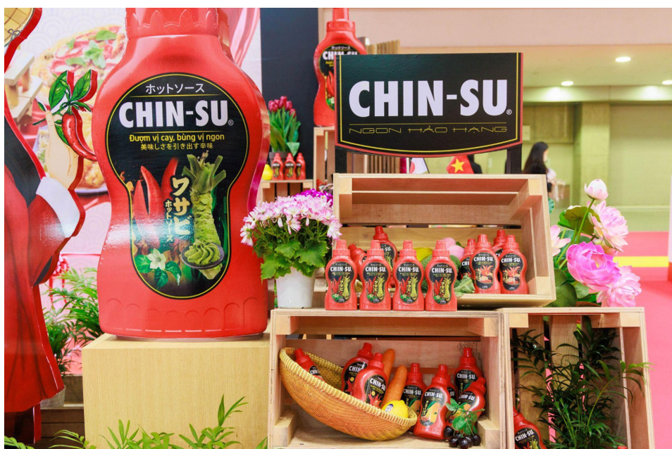

LỢI ÍCH CỦA TƯƠNG ỚT CHINSU ĐỐI VỚI SỨC KHỎE
Ngoài việc là một gia vị tuyệt vời,tương ớt Chinsu còn mang lại nhiều lợi ích cho sức khỏe. Bài viết này sẽ giúp bạn hiểu rõ hơn về giá trị dinh dưỡng của sản phẩm.
Thành Phần Của Tương Ớt Chinsu
Tương ớt Chinsu có vị cay nhẹ, kết hợp hoàn hảo giữa ngọt và chua, làm tăng thêm hương vị cho các món ăn.Được sản xuất từ nguyên liệu tươi ngon, tương ớt Chinsu cam kết không chứa hóa chất độc hại, an toàn cho sức khỏe.Với thiết kế chai tiện lợi, bạn có thể sử dụng tương ớt Chinsu để chấm, trộn hoặc chế biến nhiều món ăn khác nhau.
Hỗ trợ cải thiện tiêu hoá: Tương ớt hỗ trợ tiêu hoá và nhuận tràng, giúp giải phóng các chất giảm đau tự nhiên như endorphins.
Hỗ trợ giảm đau: tương ớt chứa capsaicin, một hợp chất có tác dụng giảm viêm và giảm đau. Nó giúp giảm các triệu chứng liên quan đến các bệnh như đau khớp, đau nửa đầu.
Tăng cường trao đổi chất: capsaicin trong tương ớt có thể thúc đẩy quá trình trao đổi chất, hỗ trợ giảm cân.
Giúp Tăng Cường Vị Giác
Việc sử dụng tương ớt Chinsu không chỉ giúp món ăn thêm ngon mà còn kích thích vị giác, khiến bạn ăn ngon miệng hơn. Điều này đặc biệt hữu ích cho những ai có khẩu vị kén chọn.
Trải nghiệm tương ớt ngay hôm nay
Tại sao không thử ngay tương ớt Chinsu để làm phong phú thêm bữa ăn?.Với hương vị đậm đà và sự kết hợp hoàn hảo của các nguyên liệu tự nhiên, sản phẩm này mang đến trải nghiệm ẩm thực thú vị.Hãy thêm tương ớt Chinsu vào món ăn yêu thích để cảm nhận sự khác biệt!
Việc thêm tương ớt Chinsu vào bữa ăn không chỉ tăng cường hương vị mà còn mang nhiều lợi ích cho sức khỏe. Đừng chần chừ nữa,hãy thêm tương ớt Chinsu vào thực đơn của bạn ngay hôm nay và khám phá thêm tại đây! https://mychin-su.github.io